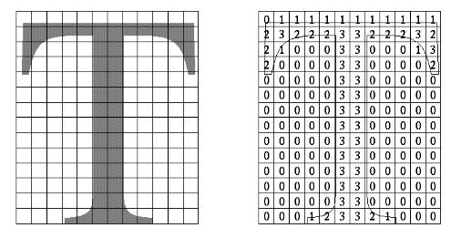
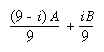
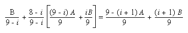
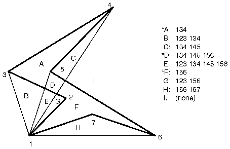
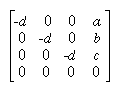
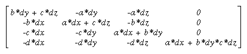
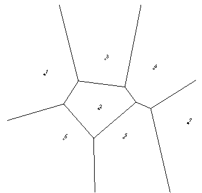
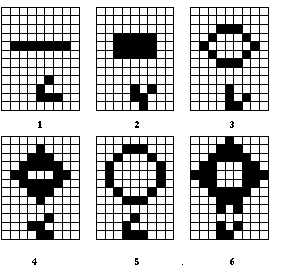

This chapter doesn't have objectives in the same way that previous chapters do. It's simply a collection of topics that describe ideas you might find useful for your application. Some topics, such as error handling, don't fit into other categories, but are too short for an entire chapter.
OpenGL is kind of a bag of low-level tools; now that you know about those tools, you can use them to implement higher-level functions. This chapter presents several examples of such higher-level capabilities.
This chapter discusses a variety of techniques based on OpenGL commands that illustrate some of the not-so-obvious uses to which you can put these commands. The examples are in no particular order and aren't related to each other. The idea is to read the section headings and skip to the examples that you find interesting. For your convenience, the headings are listed and explained briefly here.
Note: Most of the examples in the rest of this guide are complete and can be compiled and run as is. In this chapter, however, there are no complete programs, and you have to do a bit of work on your own to make them run.
Error Handling
The truth is, your program will make mistakes. Use of error-handling routines are essential during development and are highly recommended for commercially released applications. (Unless you can give a 100% guarantee your program will never generate an OpenGL error condition. Get real!) OpenGL has simple error-handling routines for the base GL and GLU libraries.
When OpenGL detects an error (in either the base GL or GLU), it records a current error code. The command that caused the error is ignored, so it has no effect on OpenGL state or on the framebuffer contents. (If the error recorded was GL_OUT_OF_MEMORY, however, the results of the command are undefined.) Once recorded, the current error code isn't cleared - that is, additional errors aren't recorded - until you call the query command glGetError(), which returns the current error code. After you've queried and cleared the current error code, or if there's no error to begin with, glGetError() returns GL_NO_ERROR.
- GLenum glGetError(void);
Returns the value of the error flag. When an error occurs in either the GL or GLU, the error flag is set to the appropriate error code value. If GL_NO_ERROR is returned, there has been no detectable error since the last call to glGetError(), or since the GL was initialized. No other errors are recorded until glGetError() is called, the error code is returned, and the flag is reset to GL_NO_ERROR.
It is strongly recommended that you call glGetError() at least once in each display() routine. Table 14-1 lists the basic defined OpenGL error codes.
Table 14-1 : OpenGL Error Codes
There are also thirty-seven GLU NURBS errors (with non-descriptive constant names, GLU_NURBS_ERROR1, GLU_NURBS_ERROR2, and so on), fourteen tessellator errors (GLU_TESS_MISSING_BEGIN_POLYGON, GLU_TESS_MISSING_END_POLYGON, GLU_TESS_MISSING_BEGIN_CONTOUR, GLU_TESS_MISSING_END_CONTOUR, GLU_TESS_COORD_TOO_LARGE, GLU_TESS_NEED_COMBINE_CALLBACK, and eight generically named GLU_TESS_ERROR*), and GLU_INCOMPATIBLE_GL_VERSION. Also, the GLU defines the error codes GLU_INVALID_ENUM, GLU_INVALID_VALUE, and GLU_OUT_OF_MEMORY, which have the same meaning as the related OpenGL codes.
To obtain a printable, descriptive string corresponding to either a GL or GLU error code, use the GLU routine gluErrorString().
In Example 14-1, a simple error handling routine is shown.
Which Version Am I Using?
The portability of OpenGL applications is one of OpenGL's attractive features. However, new versions of OpenGL introduce new features, which may introduce backward compatibility problems. In addition, you may want your application to perform equally well on a variety of implementations. For example, you might make texture mapping the default rendering mode on one machine, but only have flat shading on another. You can use glGetString() to obtain release information about your OpenGL implementation.
- const GLubyte* glGetString(GLenum
name);
Returns a pointer to a string that describes an aspect of the OpenGL implementation. name can be one of the following: GL_VENDOR, GL_RENDERER, GL_VERSION, or GL_EXTENSIONS.
GL_VENDOR returns the name of the company responsible for the OpenGL implementation. GL_RENDERER returns an identifier of the renderer, which is usually the hardware platform. For more about GL_EXTENSIONS, see the next section, "Extensions to the Standard."
GL_VERSION returns a string that identifies the version number of this implementation of OpenGL. The version string is laid out as follows:
<version number><space><vendor-specific information>
The version number is either of the form
major_number.minor_number
or
major_number.minor_number.release_number
where the numbers all have one or more digits. The vendor-specific information is optional. For example, if this OpenGL implementation is from the fictitious XYZ Corporation, the string returned might be
1.1.4 XYZ-OS 3.2
which means that this implementation is XYZ's fourth release of an OpenGL library that conforms to the specification for OpenGL Version 1.1. It probably also means this is release 3.2 of XYZ's proprietary operating system.
Another way to query the version number for OpenGL is to look for the symbolic constant (use the preprocessor statement #ifdef) named GL_VERSION_1_1. The absence of the constant GL_VERSION_1_1 means that you have OpenGL Version 1.0.
Note: If running from client to server, such as when performing indirect rendering with the OpenGL extension to the X Window System, the client and server may be different versions. If your client version is ahead of your server, your client might request an operation that is not supported on your server.
Utility Library Version
gluGetString() is a query function for the Utility Library (GLU) and is similar to glGetString().
- const GLubyte* gluGetString(GLenum
name);
Returns a pointer to a string that describes an aspect of the OpenGL implementation. name can be one of the following: GLU_VERSION, or GLU_EXTENSIONS.
Note that gluGetString() was not available in GLU 1.0. Another way to query the version number for GLU is to look for the symbolic constant GLU_VERSION_1_1. The absence of the constant GLU_VERSION_1_1 means that you have GLU 1.0.
Extensions to the Standard
OpenGL has a formal written specification that describes what operations comprise the library. An individual vendor or a group of vendors may decide to include additional functionality to their released implementation.
New routine and symbolic constant names clearly indicate whether a feature is part of the OpenGL standard or a vendor-specific extension. To make a vendor-specific name, the vendor appends a company identifier (in uppercase) and, if needed, additional information, such as a machine name. For example, if XYZ Corporation wants to add a new routine and symbolic constant, they might be of the form glCommandXYZ() and GL_DEFINITION_XYZ. If XYZ Corporation wants to have an extension that is available only on its FooBar graphics board, then the names might be glCommandXYZfb() and GL_DEFINITION_XYZ_FB.
If two of more vendors agree to implement the same extension, then the procedures and constants are suffixed with the more generic EXT (glCommandEXT() and GL_DEFINITION_EXT).
If you want to know if a particular extension is supported on your implementation, use glGetString(GL_EXTENSIONS). This returns a list of all the extensions in the implementation, separated by spaces. If you want to find out if a specific extension is supported, use the code in Example 14-2 to search through the list and match the extension name. Return GL_TRUE, if it is; GL_FALSE, if it isn't.
Example 14-2 : Find Out If An Extension Is Supported
static GLboolean QueryExtension(char *extName)
{
char *p = (char *) glGetString(GL_EXTENSIONS);
char *end = p + strlen(p);
while (p < end) {
int n = strcspn(p, " ");
if ((strlen(extName)==n) && (strncmp(extName,p,n)==0)) {
return GL_TRUE;
}
p += (n + 1);
}
return GL_FALSE;
}
Cheesy Translucency
You can use polygon stippling to simulate a translucent material. This is an especially good solution for systems that don't have blending hardware. Since polygon stipple patterns are 32x32 bits, or 1024 bits, you can go from opaque to transparent in 1023 steps. (In practice, that's many more steps than you need!) For example, if you want a surface that lets through 29 percent of the light, simply make up a stipple pattern where 29 percent (roughly 297) of the pixels in the mask are zero and the rest are one. Even if your surfaces have the same translucency, don't use the same stipple pattern for each one, as they cover exactly the same bits on the screen. Make up a different pattern for each by randomly selecting the appropriate number of pixels to be zero. (See "Displaying Points, Lines, and Polygons" in Chapter 2 for more information about polygon stippling.)
If you don't like the effect with random pixels turned on, you can use regular patterns, but they don't work as well when transparent surfaces are stacked. This is often not a problem because most scenes have relatively few translucent regions that overlap. In a picture of an automobile with translucent windows, your line of sight can go through at most two windows, and usually it's only one.
An Easy Fade Effect
Suppose you have an image that you want to fade gradually to some background color. Define a series of polygon stipple patterns, each of which has more bits turned on so that they represent denser and denser patterns. Then use these patterns repeatedly with a polygon large enough to cover the region over which you want to fade. For example, suppose you want to fade to black in 16 steps. First define 16 different pattern arrays:
GLubyte stips[16][4*32];
Then load them in such a way that each has one-sixteenth of the pixels in a 32 ´
32 stipple pattern turned on and that the bitwise OR of all the stipple patterns is all ones. After that, the following code does the trick:
draw_the_picture();
glColor3f(0.0, 0.0, 0.0); /* set color to black */
for (i = 0; i < 16; i++) {
glPolygonStipple(&stips[i][0]);
draw_a_polygon_large_enough_to_cover_the_whole_region();
}
In some OpenGL implementations, you might get better performance by first compiling the stipple patterns into display lists. During your initialization, do something like this:
#define STIP_OFFSET 100
for (i = 0; i < 16; i++) {
glNewList(i+STIP_OFFSET, GL_COMPILE);
glPolygonStipple(&stips[i][0]);
glEndList();
}
Then, replace this line in the first code fragment
glPolygonStipple(&stips[i][0]);
with
glCallList(i);
By compiling the command to set the stipple into a display list, OpenGL might be able to rearrange the data in the stips[ ][ ] array into the hardware-specific form required for maximum stipple-setting speed.
Another application for this technique is if you're drawing a changing picture and want to leave some blur behind that gradually fades out to give some indication of past motion. For example, suppose you're simulating a planetary system and you want to leave trails on the planets to show a recent portion of their path. Again, assuming you want to fade in sixteen steps, set up the stipple patterns as before (using the display-list version, say), and have the main simulation loop look something like this:
current_stipple = 0;
while (1) { /* loop forever */
draw_the_next_frame();
glCallList(current_stipple++);
if (current_stipple == 16) current_stipple = 0;
glColor3f(0.0, 0.0, 0.0); /* set color to black */
draw_a_polygon_large_enough_to_cover_the_whole_region();
}
Each time through the loop, you clear one-sixteenth of the pixels. Any pixel that hasn't had a planet on it for sixteen frames is certain to be cleared to black. Of course, if your system supports blending in hardware, it's easier to blend in a certain amount of background color with each frame. (See "Displaying Points, Lines, and Polygons" in Chapter 2 for polygon stippling details, Chapter 7 for more information about display lists, and "Blending" in Chapter 6 for information about blending.)
Object Selection Using the Back Buffer
Although the OpenGL selection mechanism (see "Selection" in Chapter 13) is powerful and flexible, it can be cumbersome to use. Often, the situation is simple: Your application draws a scene composed of a substantial number of objects; the user points to an object with the mouse, and the application needs to find the item under the tip of the cursor.
One way to do this requires your application to be running in double-buffer mode. When the user picks an object, the application redraws the entire scene in the back buffer, but instead of using the normal colors for objects, it encodes some kind of object identifier for each object's color. The application then simply reads back the pixel under the cursor, and the value of that pixel encodes the number of the picked object. If many picks are expected for a single, static picture, you can read the entire color buffer once and look in your copy for each attempted pick, rather than read back each pixel individually.
Note that this scheme has an advantage over standard selection in that it picks the object that's in front if multiple objects appear at the same pixel, one behind the other. Since the image with false colors is drawn in the back buffer, the user never sees it; you can redraw the back buffer (or copy it from the front buffer) before swapping the buffers. In color-index mode, the encoding is simple - send the object identifier as the index. In RGBA mode, encode the bits of the identifier into the R, G, and B components.
Be aware that you can run out of identifiers if there are too many objects in the scene. For example, suppose you're running in color-index mode on a system that has 4-bit buffers for color-index information (16 possible different indices) in each of the color buffers, but the scene has thousands of pickable items. To address this issue, the picking can be done in a few passes. To think about this in concrete terms, assume there are fewer than 4096 items, so all the object identifiers can be encoded in 12 bits. In the first pass, draw the scene using indices composed of the 4 high-order bits, then use the second and third passes to draw the middle 4 bits and the 4 low-order bits. After each pass, read the pixel under the cursor, extract the bits, and pack them together at the end to get the object identifier.
With this method, the picking takes three times as long, but that's often acceptable. Note that after you have the high-order 4 bits, you eliminate 15/16 of all objects, so you really need to draw only 1/16 of them for the second pass. Similarly, after the second pass, 255 of the 256 possible items have been eliminated. The first pass thus takes about as long as drawing a single frame does, but the second and third passes can be up to 16 and 256 times as fast.
If you're trying to write portable code that works on different systems, break up your object identifiers into chunks that fit on the lowest common denominator of those systems. Also, keep in mind that your system might perform automatic dithering in RGB mode. If this is the case, turn off dithering.
Cheap Image Transformation
If you want to draw a distorted version of a bitmapped image (perhaps simply stretched or rotated, or perhaps drastically modified by some mathematical function), there are many possibilities. You can use the image as a texture map, which allows you to scale, rotate, or otherwise distort the image. If you just want to scale the image, you can use glPixelZoom().
In many cases, you can achieve good results by drawing the image of each pixel as a quadrilateral. Although this scheme doesn't produce images that are as nice as those you would get by applying a sophisticated filtering algorithm (and it might not be sufficient for sophisticated users), it's a lot quicker.
To make the problem more concrete, assume that the original image is m pixels by n pixels, with coordinates chosen from [0, m-1] ´
[0, n-1]. Let the distortion functions be x(m,n) and y(m,n). For example, if the distortion is simply a zooming by a factor of 3.2, then x(m,n) = 3.2*m and y(m,n) = 3.2*n. The following code draws the distorted image:
glShadeModel(GL_FLAT);
glScale(3.2, 3.2, 1.0);
for (j=0; j < n; j++) {
glBegin(GL_QUAD_STRIP);
for (i=0; i <= m; i++) {
glVertex2i(i,j);
glVertex2i(i, j+1);
set_color(i,j);
}
glEnd();
}
This code draws each transformed pixel in a solid color equal to that pixel's color and scales the image size by 3.2. The routine set_color() stands for whatever the appropriate OpenGL command is to set the color of the image pixel.
The following is a slightly more complex version that distorts the image using the functions x(i,j) and y(i,j):
glShadeModel(GL_FLAT);
for (j=0; j < n; j++) {
glBegin(GL_QUAD_STRIP);
for (i=0; i <= m; i++) {
glVertex2i(x(i,j), y(i,j));
glVertex2i(x(i,j+1), y(i,j+1));
set_color(i,j);
}
glEnd();
}
An even better distorted image can be drawn with the following code:
glShadeModel(GL_SMOOTH);
for (j=0; j < (n-1); j++) {
glBegin(GL_QUAD_STRIP);
for (i=0; i < m; i++) {
set_color(i,j);
glVertex2i(x(i,j), y(i,j));
set_color(i,j+1);
glVertex2i(x(i,j+1), y(i,j+1));
}
glEnd();
}
This code smoothly interpolates color across each quadrilateral. Note that this version produces one fewer quadrilateral in each dimension than do the flat-shaded versions, because the color image is being used to specify colors at the quadrilateral vertices. In addition, you can antialias the polygons with the appropriate blending function (GL_SRC_ALPHA, GL_ONE) to get an even nicer image.
You want your program to display eight different colors, depending on the layers present. One arbitrary possibility is shown in the last column of the table. To use this method, use color-index mode and load your color map so that entry 0 is black, entry 1 is red, entry 2 is green, and so on. Note that if the numbers from 0 through 7 are written in binary, the 4 bit is turned on whenever layer 3 appears, the 2 bit whenever layer 2 appears, and the 1 bit whenever layer 1 appears.
To clear the window, set the writemask to 7 (all three layers) and set the clearing color to 0. To draw your image, set the color to 7, and then when you want to draw something in layer n, set the writemask to n. In other types of applications, it might be necessary to selectively erase in a layer, in which case you would use the writemasks just discussed, but set the color to 0 instead of 7. (See "Masking Buffers" in Chapter 10 for more information about writemasks.)
Antialiased Characters
Using the standard technique for drawing characters with glBitmap(), drawing each pixel of a character is an all-or-nothing affair - the pixel is either turned on or not. If you're drawing black characters on a white background, for example, the resulting pixels are either black or white, never a shade of gray. Much smoother, higher-quality images can be achieved if intermediate colors are used when rendering characters (grays, in this example).
Assuming that you're drawing black characters on a white background, imagine a highly magnified picture of the pixels on the screen, with a high-resolution character outline superimposed on it, as shown in the left side of Figure 14-1.

Figure 14-1 : Antialiased Characters
Notice that some of the pixels are completely enclosed by the character's outline and should be painted black; some pixels are completely outside the outline and should be painted white; but many pixels should ideally be painted some shade of gray, where the darkness of the gray corresponds to the amount of black in the pixel. If this technique is used, the resulting image on the screen looks better.
If speed and memory usage are of no concern, each character can be drawn as a small image instead of as a bitmap. If you're using RGBA mode, however, this method might require up to 32 bits per pixel of the character to be stored and drawn, instead of the 1 bit per pixel in a standard character. Alternatively, you could use one 8-bit index per pixel and convert these indices to RGBA by table lookup during transfer. In many cases, a compromise is possible that allows you to draw the character with a few gray levels between black and white (say, two or three), and the resulting font description requires only 2 or 3 bits per pixel of storage.
The numbers in the right side of Figure 14-1 indicate the approximate percentage coverage of each pixel: 0 means approximately empty, 1 means approximately one-third coverage, 2 means two-thirds, and 3 means completely covered. If pixels labeled 0 are painted white, pixels labeled 3 are painted black, and pixels labeled 1 and 2 are painted one-third and two-thirds black, respectively, the resulting character looks quite good. Only 2 bits are required to store the numbers 0, 1, 2, and 3, so for 2 bits per pixel, four levels of gray can be saved.
There are basically two methods to implement antialiased characters, depending on whether you're in RGBA or color-index mode.
In RGBA mode, define three different character bitmaps, corresponding to where 1, 2, and 3 appear in Figure 14-1. Set the color to white, and clear for the background. Set the color to one-third gray (RGB = (0.666, 0.666, 0.666)), and draw all the pixels with a 1 in them. Then set RGB = (0.333, 0.333, 0.333), draw with the 2 bitmap, and use RGB = (0.0, 0.0, 0.0) for the 3 bitmap. What you're doing is defining three different fonts and redrawing the string three times, where each pass fills in the bits of the appropriate color densities.
In color-index mode, you can do exactly the same thing, but if you're willing to set up the color map correctly and use writemasks, you can get away with only two bitmaps per character and two passes per string. In the preceding example, set up one bitmap that has a 1 wherever 1 or 3 appears in the character. Set up a second bitmap that has a 1 wherever a 2 or a 3 appears. Load the color map so that 0 gives white, 1 gives light gray, 2 gives dark gray, and 3 gives black. Set the color to 3 (11 in binary) and the writemask to 1, and draw the first bitmap. Then change the writemask to 2, and draw the second. Where 0 appears in Figure 14-1, nothing is drawn in the framebuffer. Where 1, 2, and 3 appear, 1, 2, and 3 appear in the framebuffer.
For this example with only four gray levels, the savings is small - two passes instead of three. If eight gray levels were used instead, the RGBA method would require seven passes, and the color-map masking technique would require only three. With sixteen gray levels, the comparison is fifteen passes to four passes. (See "Masking Buffers" in Chapter 10 for more information about writemasks and "Bitmaps and Fonts" in Chapter 8 for more information about drawing bitmaps.)
Try This
- Can you see how to do RGBA rendering using no more images than the optimized color-index case? Hint: How are RGB fragments normally merged into the color buffer when antialiasing is desired?
Interpolating Images
Suppose you have a pair of images (where image can mean a bitmap image, or a picture generated using geometry in the usual way), and you want to smoothly blend from one to the other. This can be done easily using the alpha component and appropriate blending operations. Let's say you want to accomplish the blending in ten steps, where image A is shown in frame 0 and image B is shown in frame 9. The obvious approach is to draw image A with alpha equal to (9- &igr; )/9 and image B with an alpha of i/9 in frame i.
The problem with this method is that both images must be drawn in each frame. A faster approach is to draw image A in frame 0. To get frame 1, blend in 1/9 of image B and 8/9 of what's there. For frame 2, blend in 1/8 of image B with 7/8 of what's there. For frame 3, blend in 1/7 of image B with 6/7 of what's there, and so on. For the last step, you're just drawing 1/1 of image B blended with 0/1 of what's left, yielding image B exactly.
To see that this works, if for frame i you have

and you blend in B/(9- &igr; ) with (8- &igr; )/(9- &igr; ) of what's there, you get

(See "Blending" in Chapter 6.)
Making Decals
Suppose you're drawing a complex three-dimensional picture using depth-buffering to eliminate the hidden surfaces. Suppose further that one part of your picture is composed of coplanar figures A and B, where B is a sort of decal that should always appear on top of figure A.
Your first approach might be to draw B after you've drawn A, setting the depth-buffering function to replace on greater or equal. Due to the finite precision of the floating-point representations of the vertices, however, round-off error can cause polygon B to be sometimes a bit in front and sometimes a bit behind figure A. Here's one solution to this problem.
Disable the depth buffer for writing, and render A.
Enable the depth buffer for writing, and render B.
Disable the color buffer for writing, and render A again.
Enable the color buffer for writing.
Note that during the entire process, the depth-buffer test is enabled. In step 1, A is rendered wherever it should be, but none of the depth-buffer values are changed; thus, in step 2, wherever B appears over A, B is guaranteed to be drawn. Step 3 simply makes sure that all of the depth values under A are updated correctly, but since RGBA writes are disabled, the color pixels are unaffected. Finally, step 4 returns the system to the default state (writing is enabled both in the depth buffer and in the color buffer).
If a stencil buffer is available, the following simpler technique works.
Configure the stencil buffer to write one if the depth test passes, and zero otherwise. Render A.
Configure the stencil buffer to make no stencil value change, but to render only where stencil values are one. Disable the depth-buffer test and its update. Render B.
With this method, it's not necessary to initialize the contents of the stencil buffer at any time, because the stencil value of all pixels of interest (that is, those rendered by A) are set when A is rendered. Be sure to reenable the depth test and disable the stencil test before additional polygons are drawn. (See "Selecting Color Buffers for Writing and Reading,""Depth Test," and "Stencil Test" in Chapter 10.)
Drawing Filled, Concave Polygons Using the Stencil Buffer
Consider the concave polygon 1234567 shown in Figure 14-2. Imagine that it's drawn as a series of triangles: 123, 134, 145, 156, 167, all of which are shown in the figure. The heavier line represents the original polygon boundary. Drawing all these triangles divides the buffer into nine regions A, B, C, ..., I, where region I is outside all the triangles.

Figure 14-2 : Concave Polygon
In the text of the figure, each of the region names is followed by a list of the triangles that cover it. Regions A, D, and F make up the original polygon; note that these three regions are covered by an odd number of triangles. Every other region is covered by an even number of triangles (possibly zero). Thus, to render the inside of the concave polygon, you just need to render regions that are enclosed by an odd number of triangles. This can be done using the stencil buffer, with a two-pass algorithm.
First, clear the stencil buffer and disable writing into the color buffer. Next, draw each of the triangles in turn, using the GL_INVERT function in the stencil buffer. (For best performance, use triangle fans.) This flips the value between zero and a nonzero value every time a triangle is drawn that covers a pixel. After all the triangles are drawn, if a pixel is covered an even number of times, the value in the stencil buffers is zero; otherwise, it's nonzero. Finally, draw a large polygon over the whole region (or redraw the triangles), but allow drawing only where the stencil buffer is nonzero.
Note: There's a slight generalization of the preceding technique, where you don't need to start with a polygon vertex. In the 1234567 example, let P be any point on or off the polygon. Draw the triangles: P12, P23, P34, P45, P56, P67, and P71. Regions covered by an odd number of triangles are inside; other regions are outside. This is a generalization in that if P happens to be one of the polygon's edges, one of the triangles is empty.
This technique can be used to fill both nonsimple polygons (polygons whose edges cross each other) and polygons with holes. The following example illustrates how to handle a complicated polygon with two regions, one four-sided and one five-sided. Assume further that there's a triangular and a four-sided hole (it doesn't matter in which regions the holes lie). Let the two regions be abcd and efghi, and the holes jkl and mnop. Let z be any point on the plane. Draw the following triangles:
zab zbc zcd zda zef zfg zgh zhi zie zjk zkl zlj zmn zno zop zpm
Mark regions covered by an odd number of triangles as in, and those covered by an even number as out. (See "Stencil Test" in Chapter 10 for more information about the stencil buffer.)
Finding Interference Regions
If you're designing a mechanical part made from smaller three-dimensional pieces, you often want to display regions where the pieces overlap. In many cases, such regions indicate design errors where parts of a machine interfere with each other. In the case of moving parts, it can be even more valuable, since a search for interfering regions can be done through a complete mechanical cycle of the design. The method for doing this is complicated, and the description here might be too brief. Complete details can be found in the paper Interactive Inspection of Solids: Cross-sections and Interferences, by Jarek Rossignac, Abe Megahed, and Bengt-Olaf Schneider (SIGGRAPH 1992 Proceedings).
The method is related to the capping algorithm described in "Stencil Test" in Chapter 10. The idea is to pass an arbitrary clipping plane through the objects that you want to test for interference, and then determine when a portion of the clipping plane is inside more than one object at a time. For a static image, the clipping plane can be moved manually to highlight interfering regions; for a dynamic image, it might be easier to use a grid of clipping planes to search for all possible interferences.
Draw each of the objects you want to check and clip them against the clipping plane. Note which pixels are inside the object at that clipping plane using an odd-even count in the stencil buffer, as explained in the preceding section. (For properly formed objects, a point is inside the object if a ray drawn from that point to the eye intersects an odd number of surfaces of the object.) To find interferences, you need to find pixels in the framebuffer where the clipping plane is in the interior of two or more regions at once; in other words, in the intersection of the interiors of any pair of objects.
If multiple objects need to be tested for mutual intersection, store 1 bit every time some intersection appears, and another bit wherever the clipping buffer is inside any of the objects (the union of the objects' interiors). For each new object, determine its interior, find the intersection of that interior with the union of the interiors of the objects so far tested, and keep track of the intersection points. Then add the interior points of the new object to the union of the other objects' interiors.
You can perform the operations described in the preceding paragraph by using different bits in the stencil buffer together with various masking operations. Three bits of stencil buffer are required per pixel - one for the toggling to determine the interior of each object, one for the union of all interiors discovered so far, and one for the regions where interference has occurred so far. To make this discussion more concrete, assume the 1 bit of the stencil buffer is for toggling interior/exterior, the 2 bit is the running union, and the 4 bit is for interferences so far. For each object that you're going to render, clear the 1 bit (using a stencil mask of one and clearing to zero), then toggle the 1 bit by keeping the stencil mask as one and using the GL_INVERT stencil operation.
You can find intersections and unions of the bits in the stencil buffers using the stenciling operations. For example, to make bits in buffer 2 be the union of the bits in buffers 1 and 2, mask the stencil to those 2 bits, and draw something over the entire object with the stencil function set to pass if anything nonzero occurs. This happens if the bits in buffer 1, buffer 2, or both are turned on. If the comparison succeeds, write a 1 in buffer 2. Also, make sure that drawing in the color buffer is disabled. An intersection calculation is similar - set the function to pass only if the value in the two buffers is equal to 3 (bits turned on in both buffers 1 and 2). Write the result into the correct buffer. (See "Stencil Test" in Chapter 10.)
Shadows
Every possible projection of three-dimensional space to three-dimensional space can be achieved with a suitable 4 ´
4 invertible matrix and homogeneous coordinates. If the matrix isn't invertible but has rank 3, it projects three-dimensional space onto a two-dimensional plane. Every such possible projection can be achieved with a suitable rank-3 4 ´
4 matrix. To find the shadow of an arbitrary object on an arbitrary plane from an arbitrary light source (possibly at infinity), you need to find a matrix representing that projection, multiply it on the matrix stack, and draw the object in the shadow color. Keep in mind that you need to project onto each plane that you're calling the "ground."
As a simple illustration, assume the light is at the origin, and the equation of the ground plane is ax+by+c+d=0. Given a vertex S=(sx,sy,sz,1), the line from the light through S includes all points &agr; S, where &agr; is an arbitrary real number. The point where this line intersects the plane occurs when
&agr; (a*sz+b*sy+c*sz) + d = 0,
so
&agr; = - &dgr; /(a*sx+b*sy+c*sz).
Plugging this back into the line, we get
- &dgr; ( &sgr; &xgr; , &sgr; &psgr; , &sgr; &zgr; )/( &agr; * &sgr; &xgr; + &bgr; * &sgr; &psgr; + &khgr; * &sgr; &zgr; )
for the point of intersection.
The matrix that maps S to this point for every S is

This matrix can be used if you first translate the world so that the light is at the origin.
If the light is from an infinite source, all you have is a point S and a direction D = (dx,dy,dz). Points along the line are given by
S + &agr; D
Proceeding as before, the intersection of this line with the plane is given by
a(sx+ &agr; dx)+b(sy+ &agr; dy)+c(sz+ &agr; dz)+d = 0
Solving for &agr; , plugging that back into the equation for a line, and then determining a projection matrix gives

This matrix works given the plane and an arbitrary direction vector. There's no need to translate anything first. (See Chapter 3 and Appendix F.)
Hidden-Line Removal
If you want to draw a wireframe object with hidden lines removed, one approach is to draw the outlines using lines and then fill the interiors of the polygons making up the surface with polygons having the background color. With depth-buffering enabled, this interior fill covers any outlines that would be obscured by faces closer to the eye. This method would work, except that there's no guarantee that the interior of the object falls entirely inside the polygon's outline; in fact, it might overlap it in various places.
There's an easy, two-pass solution using either polygon offset or the stencil buffer. Polygon offset is usually the preferred technique, since polygon offset is almost always faster than stencil buffer. Both methods are described here, so you can see how both approaches to the problem work.
Hidden-Line Removal with Polygon Offset
To use polygon offset to accomplish hidden-line removal, the object is drawn twice. The highlighted edges are drawn in the foreground color, using filled polygons but with the polygon mode GL_LINE to rasterize it as a wireframe. Then the filled polygons are drawn with the default polygon mode, which fills the interior of the wireframe, and with enough polygon offset to nudge the filled polygons a little farther from the eye. With the polygon offset, the interior recedes just enough that the highlighted edges are drawn without unpleasant visual artifacts.
glEnable(GL_DEPTH_TEST);
glPolygonMode(GL_FRONT_AND_BACK, GL_LINE);
set_color(foreground);
draw_object_with_filled_polygons();
glPolygonMode(GL_FRONT_AND_BACK, GL_FILL);
glEnable(GL_POLYGON_OFFSET_FILL);
glPolygonOffset(1.0, 1.0);
set_color(background);
draw_object_with_filled_polygons();
glDisable(GL_POLYGON_OFFSET_FILL);
You may need to adjust the amount of offset needed (for wider lines, for example). (See "Polygon Offset" in Chapter 6 for more information.)
Hidden-Line Removal with the Stencil Buffer
Using the stencil buffer for hidden-line removal is a more complicated procedure. For each polygon, you'll need to clear the stencil buffer, and then draw the outline both in the framebuffer and in the stencil buffer. Then when you fill the interior, enable drawing only where the stencil buffer is still clear. To avoid doing an entire stencil-buffer clear for each polygon, an easy way to clear it is simply to draw 0's into the buffer using the same polygon outline. In this way, you need to clear the entire stencil buffer only once.
For example, the following code represents the inner loop you might use to perform such hidden-line removal. Each polygon is outlined in the foreground color, filled with the background color, and then outlined again in the foreground color. The stencil buffer is used to keep the fill color of each polygon from overwriting its outline. To optimize performance, the stencil and color parameters are changed only twice per loop by using the same values both times the polygon outline is drawn.
glEnable(GL_STENCIL_TEST);
glEnable(GL_DEPTH_TEST);
glClear(GL_STENCIL_BUFFER_BIT);
glStencilFunc(GL_ALWAYS, 0, 1);
glStencilOp(GL_INVERT, GL_INVERT, GL_INVERT);
set_color(foreground);
for (i=0; i < max; i++) {
outline_polygon(i);
set_color(background);
glStencilFunc(GL_EQUAL, 0, 1);
glStencilOp(GL_KEEP, GL_KEEP, GL_KEEP);
fill_polygon(i);
set_color(foreground);
glStencilFunc(GL_ALWAYS, 0, 1);
glStencilOp(GL_INVERT, GL_INVERT, GL_INVERT);
outline_polygon(i);
}
(See "Stencil Test" in Chapter 10.)
Drawing Depth-Buffered Images
For complex static backgrounds, the rendering time for the geometric description of the background can be greater than the time it takes to draw a pixel image of the rendered background. If there's a fixed background and a relatively simple changing foreground, you may want to draw the background and its associated depth-buffered version as an image rather than render it geometrically. The foreground might also consist of items that are time-consuming to render, but whose framebuffer images and depth buffers are available. You can render these items into a depth-buffered environment using a two-pass algorithm.
For example, if you're drawing a model of a molecule made of spheres, you might have an image of a beautifully rendered sphere and its associated depth-buffer values that were calculated using Phong shading or ray-tracing or by using some other scheme that isn't directly available through OpenGL. To draw a complex model, you might be required to draw hundreds of such spheres, which should be depth-buffered together.
To add a depth-buffered image to the scene, first draw the image's depth-buffer values into the depth buffer using glDrawPixels(). Then enable depth-buffering, set the writemask to zero so that no drawing occurs, and enable stenciling such that the stencil buffers get drawn whenever a write to the depth buffer occurs.
Then draw the image into the color buffer, masked by the stencil buffer you've just written so that writing occurs only when there's a 1 in the stencil buffer. During this write, set the stenciling function to zero out the stencil buffer so that it's automatically cleared when it's time to add the next image to the scene. If the objects are to be moved nearer to or farther from the viewer, you need to use an orthographic projection; in these cases, you use GL_DEPTH_BIAS with glPixelTransfer*() to move the depth image. (See "Coordinate System Survival Kit" in Chapter 2, "Depth Test" and "Stencil Test" in Chapter 10, and Chapter 8 for details on glDrawPixels() and glPixelTransfer*().)
Dirichlet Domains
Given a set S of points on a plane, the Dirichlet domain or Voronoi polygon of one of the points is the set of all points in the plane closer to that point than to any other point in the set S. These points provide the solution to many problems in computational geometry. Figure 14-3 shows outlines of the Dirichlet domains for a set of points.

Figure 14-3 : Dirichlet Domains
If you draw a depth-buffered cone with its apex at the point in a different color than each of the points in S, the Dirichlet domain for each point is drawn in that color. The easiest way to do this is to precompute a cone's depth in an image and use the image as the depth-buffer values as described in the preceding section. You don't need an image to draw in the framebuffer as in the case of shaded spheres, however. While you're drawing into the depth buffer, use the stencil buffer to record the pixels where drawing should occur by first clearing it and then writing nonzero values wherever the depth test succeeds. To draw the Dirichlet region, draw a polygon over the entire window, but enable drawing only where the stencil buffers are nonzero.
You can do this perhaps more easily by rendering cones of uniform color with a simple depth buffer, but a good cone might require thousands of polygons. The technique described in this section can render much higher-quality cones much more quickly. (See "A Hidden-Surface Removal Survival Kit" in Chapter 5 and "Depth Test" in Chapter 10.)
Life in the Stencil Buffer
The Game of Life, invented by John Conway, is played on a rectangular grid where each grid location is "alive" or "dead." To calculate the next generation from the current one, count the number of live neighbors for each grid location (the eight adjacent grid locations are neighbors). A grid location is alive in generation n+1 if it was alive in generation n and has exactly two or three live neighbors, or if it was dead in generation n and has exactly three live neighbors. In all other cases, it is dead in generation n+1. This game generates some incredibly interesting patterns given different initial configurations. (See Martin Gardner, "Mathematical Games," Scientific American, vol. 223, no. 4, October 1970, p. 120123.) Figure 14-4 shows six generations from a game.

Figure 14-4 : Six Generations from the Game of Life
One way to create this game using OpenGL is to use a multipass algorithm. Keep the data in the color buffer, one pixel for each grid point. Assume that black (all zeros) is the background color, and the color of a live pixel is nonzero. Initialize by clearing the depth and stencil buffers to zero, set the depth-buffer writemask to zero, and set the depth comparison function so that it passes on not-equal. To iterate, read the image off the screen, enable drawing into the depth buffer, and set the stencil function so that it increments whenever a depth comparison succeeds but leaves the stencil buffer unchanged otherwise. Disable drawing into the color buffer.
Next, draw the image eight times, offset one pixel in each vertical, horizontal, and diagonal direction. When you're done, the stencil buffer contains a count of the number of live neighbors for each pixel. Enable drawing to the color buffer, set the color to the color for live cells, and set the stencil function to draw only if the value in the stencil buffer is 3 (three live neighbors). In addition, if this drawing occurs, decrement the value in the stencil buffer. Then draw a rectangle covering the image; this paints each cell that has exactly three live neighbors with the "alive" color.
At this point, the stencil buffers contain 0, 1, 2, 4, 5, 6, 7, 8, and the values under the 2's are correct. The values under 0, 1, 4, 5, 6, 7, and 8 must be cleared to the "dead" color. Set the stencil function to draw whenever the value is not 2, and to zero the stencil values in all cases. Then draw a large polygon of the "dead" color across the entire image. You're done.
For a usable demonstration program, you might want to zoom the grid up to a size larger than a single pixel; it's hard to see detailed patterns with a single pixel per grid point. (See "Coordinate System Survival Kit" in Chapter 2, and "Depth Test" and "Stencil Test" in Chapter 10.)